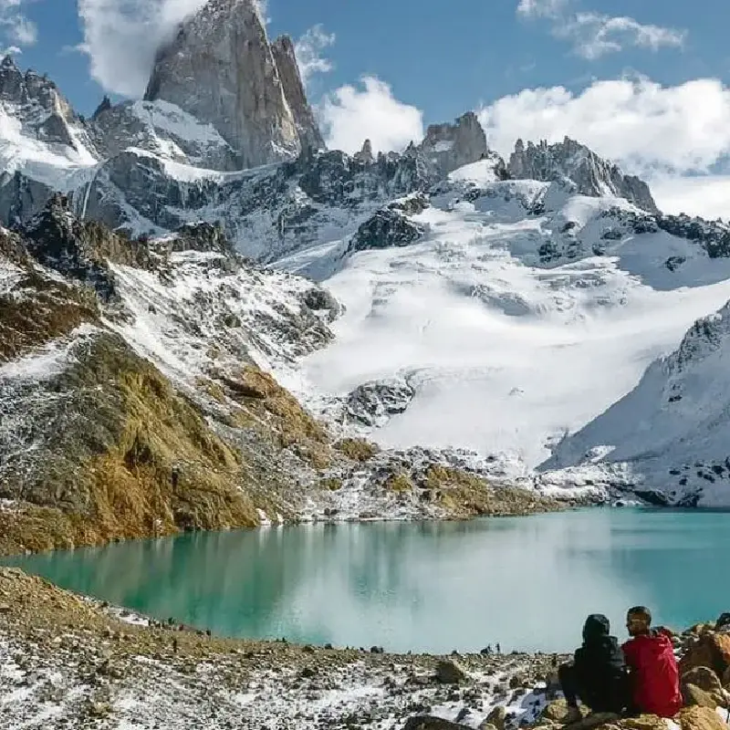
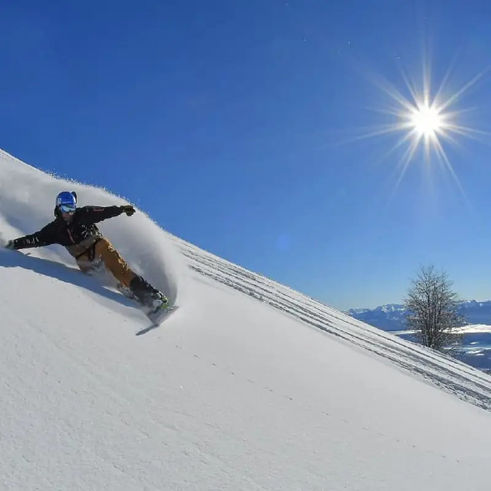
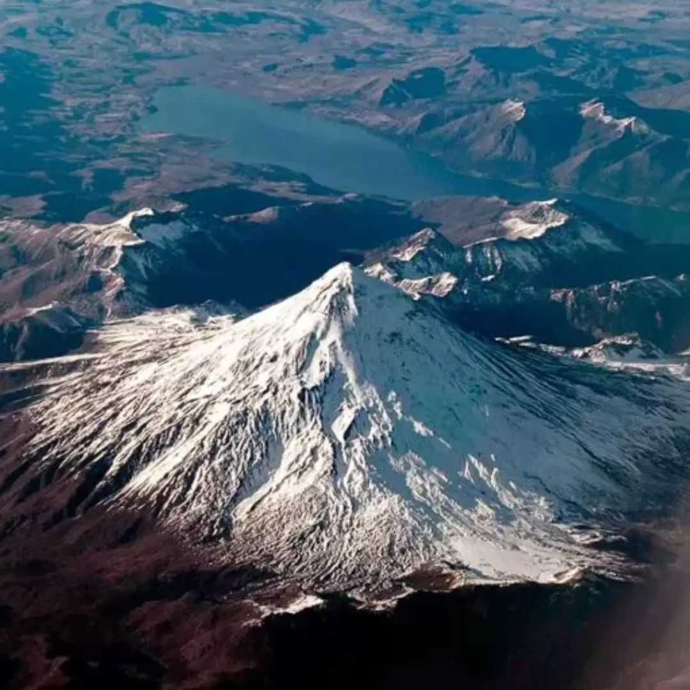

Recorrer a pie
Desde paseos hasta jornadas exigentes: elegí según tu experiencia, el desnivel y las horas de luz.
Dónde empezar: El Chaltén y Cordón del Plata.
Ver destino → Montañas
MontañasElegí la experiencia por lo que querés disfrutar y por tu preparación. El paisaje también se descubre sin llegar a una cumbre.

Desde paseos hasta jornadas exigentes: elegí según tu experiencia, el desnivel y las horas de luz.
Dónde empezar: El Chaltén y Cordón del Plata.
Ver destino →
Consultá apertura de pistas, alquiler de equipo y clases directamente con los centros de montaña.
Dónde empezar: Cerro Catedral.
Ver destino →
Miradores, bosques y lagos también son una forma de vivir la montaña. Respetá los accesos y la fauna.
Dónde empezar: Parque Nacional Lanín.
Ver destino →